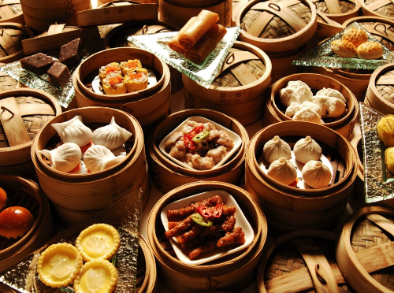
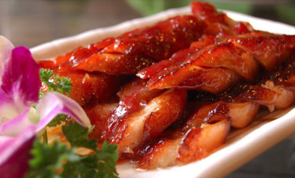

Cantonese cuisine comes from Guangdong province and is one of the Eight Culinary Traditions of Chinese cuisine. Its prominence outside China is due to the large number of emigrants from Guangdong. Chefs trained in Cantonese cuisine are highly sought after throughout China.
-Read more-
Guangzhou, the capital of Guangdong province, has long been a trading port and many imported foods and ingredients are used in Cantonese cuisine. Besides pork, beef and chicken, Cantonese cuisine incorporates almost all edible meats, including offal, chicken feet, duck's tongue, snakes, and snails. However, lamb and goat are rarely eaten, unlike in the cuisines of northern or western China. Many cooking methods are used, with steaming and stir frying being the most favoured due to their convenience and rapidity. Other techniques include shallow frying, double steaming, braising, and deep frying.
Following shows some typical cuisines of Cantonese, hope you will enjoy them! :)
Yum Cha (Dim Sum)
Yum cha, also known as going for dim sum, is a type of Chinese style brunch tea, which involves drinking Chinese tea and eating dim sum. It is popular in Cantonese-speaking regions in China, including the southern provinces of Guangdong and the special administrative regions of Hong Kong and Macau, and has spread to other regions worldwide due to the presence of overseas Chinese.
As Cantonese people tend to avoid fried foods early in the day, steamed dishes dominate most dim sum menus. There are also snack-sized portions of pan-fried, deep-fried, and steamed food served in bamboo steamers, which are designed to be eaten communally and washed down with tea. In general, people go to Yum cha with families, co-workers, and groups of people, so it is also a common choice for people to get together and catch up.

Siu mei
Siu mei is the generic name in Cantonese cuisine given to meats roasted on spits over an open fire or a huge wood burning rotisserie oven. It creates a unique, deep barbecue flavor and the roast is usually coated with a flavorful sauce (a different sauce is used for each variety of meat) before roasting. Siu mei is very popular in Hong Kong and Macau.
Usually meat of this type is purchased as take-out as siu mei takes a great deal of resources to prepare, and few families in Hong Kong or mainland China have the equipment for it. Shops generally have large ovens and rotisserie-like utilities for cooking the meat. Families order or prepare their own plain white rice to accompany the siu mei. A siu mei meal usually consists of one box comprising half meat and half rice, and maybe some vegetables. Certain dishes, such as orange cuttlefish, or white cut chicken, are not roasted at all, but are often prepared and sold alongside BBQ roasted meats in siu mei establishments, hence they are generally classified as siu mei dishes.

Double stewed soup
A bowl of delicious double-stewed soup is not only enjoyable, it can wash away all your cares after a hard day’s work. Double-stewed soups are great at extracting the nutrients and fibers of vegetables, fruits, and herbs for easy ingestion. Chinese cooks believe that double-stewed soups have health and beauty benefits.